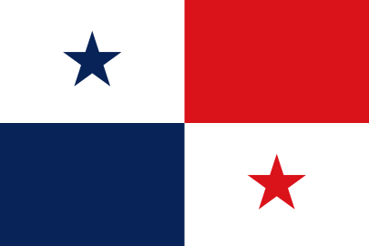
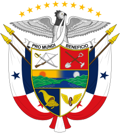

Simbolo patrios
- Flor del Espíritu Santo, flor nacional
- Águila arpía, ave nacional
- Sterculia apetala, árbol nacional
- Bandera nacional 
- Escudo nacional 
La historia de Panamá abarca desde la llegada de sus primeros habitantes hasta la actualidad. Su historia se divide en cuatro grandes épocas: prehispánica, virreinal, colombiana y republicana. También se encuentran subperiodos como la conquista española, la independencia de Panamá del Imperio español, la separación de Panamá de Colombia, la dictadura militar en Panamá, y el regreso a la Democracia.
75 420 km²